Kibana Guide: Create a Dashboard and the First Lens Panel
|
This content was generated with the assistance of AI and should be verified against the official documentation before being relied on in production. |
Checked on 2026-11-11 against Kibana 9.5.x.
What you build
You create a new dashboard called Bookshelf (guides) and put one Lens panel on it, a bar chart that counts the Bookshelf log records for each HTTP status. The dashboard is the starting point of the later guides in this series, which add time series charts, metrics, controls and drilldowns to it.
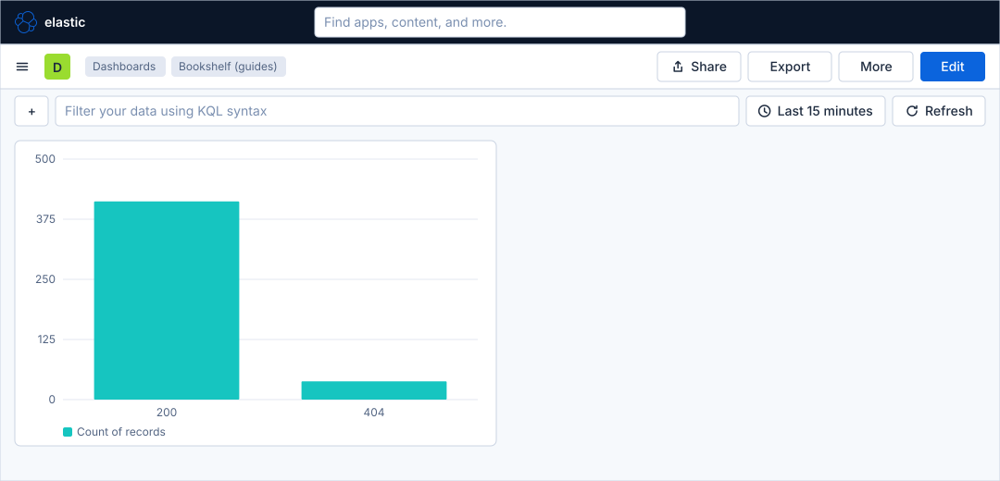
Before you start
-
Start the Kibana profile of the hands-on lab and wait about a minute:
cd lab docker compose --profile kibana up -d -
Open http://localhost:5601 and sign in as
elasticwith the passwordlab-elastic-password. When Kibana opens its full-screen welcome page, click Explore on my own. -
Do the previous guide, Field statistics, patterns and ES|QL in Discover, and the guide that creates the data view, Upload a file and create a data view. This guide needs the data view Bookshelf logs (guides), with the index pattern
logs-generic.otel-defaultand the time field@timestamp. -
The load generator sends traffic to the Bookshelf service in its default mode, which fills the log data stream. Lens and dashboards need no licence beyond the basic one; the lab runs a trial licence anyway.
-
The guide was checked on Elasticsearch and Kibana 9.5.6. The figures are drawings of the Kibana 9.5 user interface, not screenshots, so small details can differ from your screen. A highlighted box with a number marks the control of the step with the same number.
Steps
Two screens are used. The first map shows the Lens editor; the second shows a dashboard in edit mode with the Add to dashboard flyout. Come back to them when a control is not where the figure shows it.
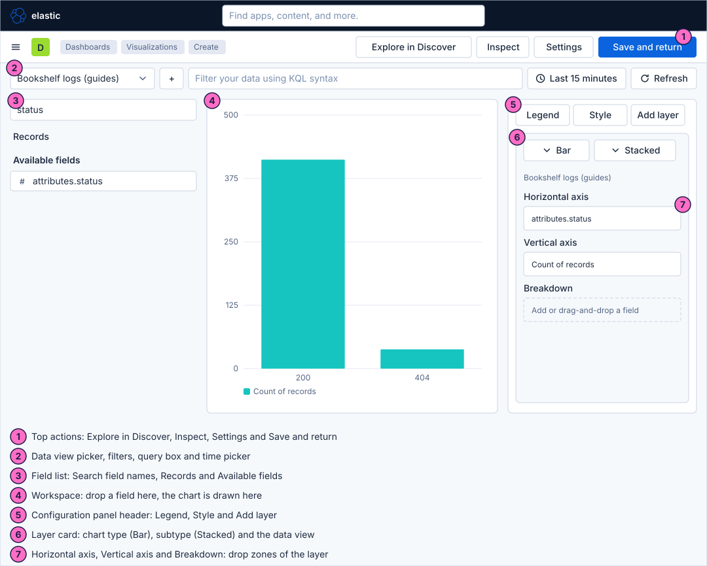
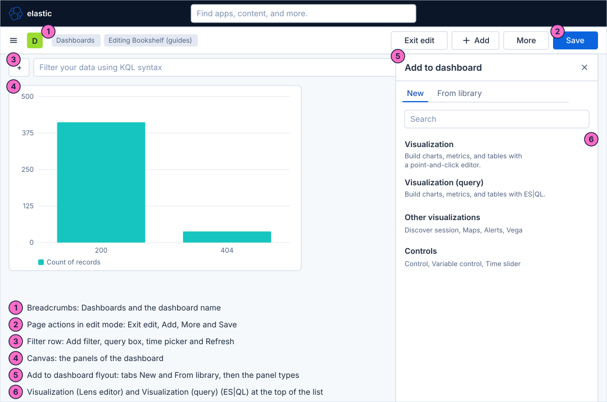
Open a new dashboard
-
Click the menu button (Toggle primary navigation) at the left of the second bar.
-
Under Analytics, click Dashboards.
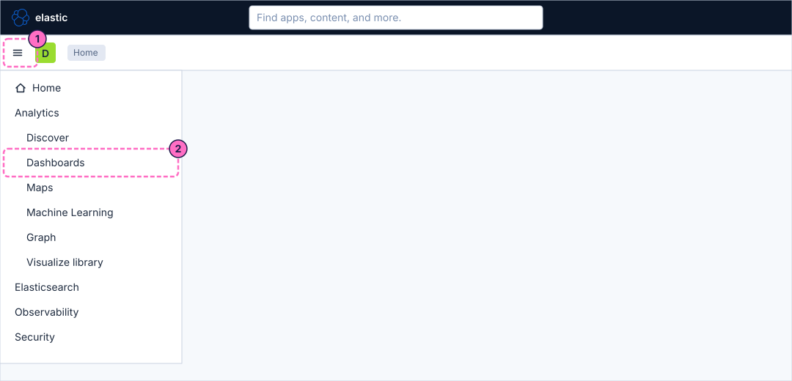
-
Click Create dashboard.
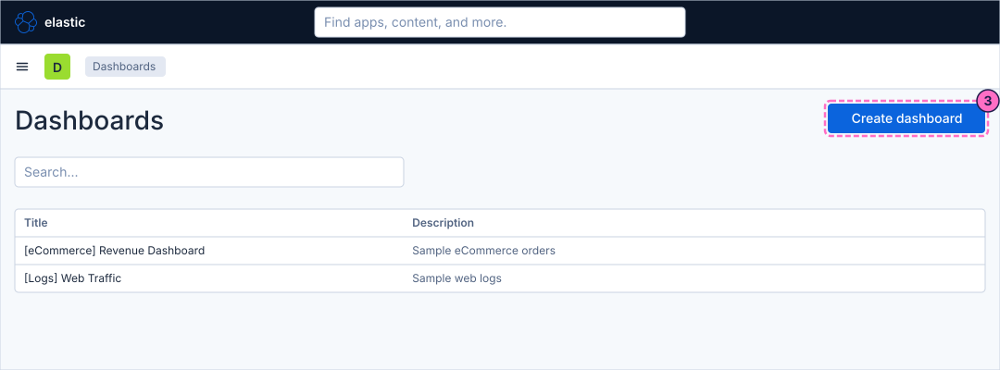
Create the first visualization
-
The new dashboard is in edit mode and says "This dashboard is empty. Let’s fill it up!". Click Create visualization ("Build charts, metrics, and tables with a point-and-click editor."). On a dashboard that already has panels, the Add button of the second bar opens the Add to dashboard flyout, where the same editor is the entry Visualization; Visualization (query) is the ES|QL editor of a later guide.
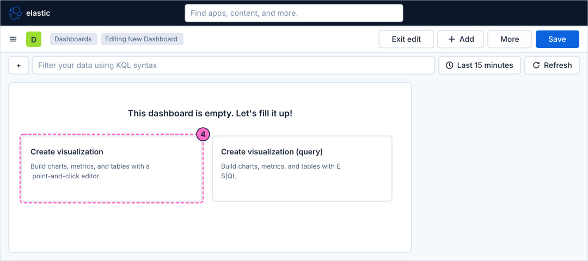
Build the bar chart in Lens
-
Lens opens with an empty workspace. Check that the Data view picker above the field list shows Bookshelf logs (guides). If it shows another data view, open the picker and choose Bookshelf logs (guides).
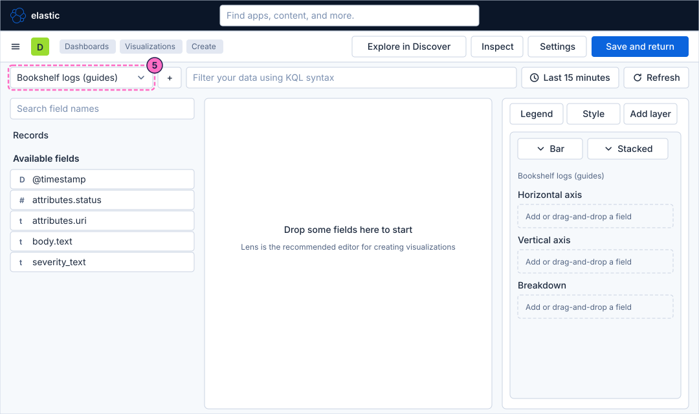
-
In Search field names, type
status. The field list narrows to the fields whose name contains the text. -
Drag the field
attributes.statusfrom the field list onto the dashed Horizontal axis button of the layer, which says "Add or drag-and-drop a field".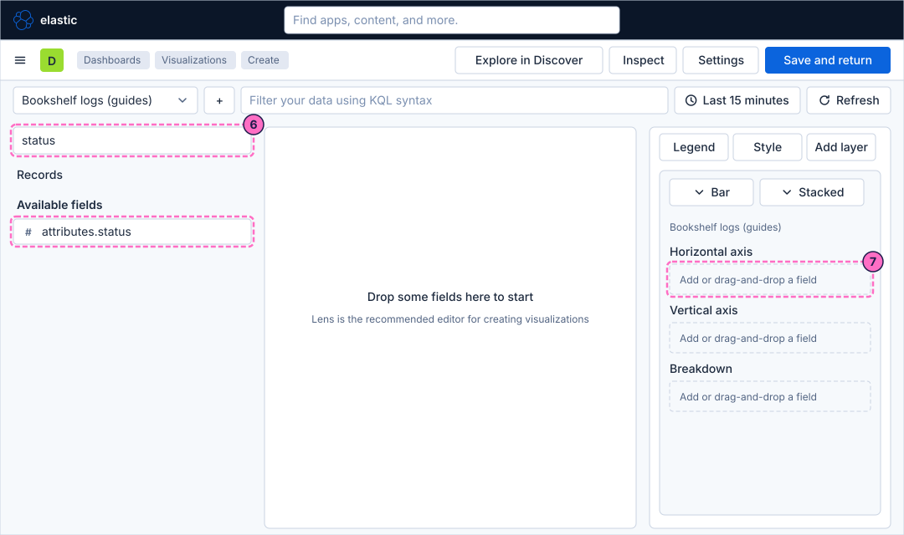
-
Click the new Horizontal axis entry to open its editor. Select the function Top values for the field
attributes.status, so that each status becomes one bar. If the editor already shows Top values, keep it. Close the editor.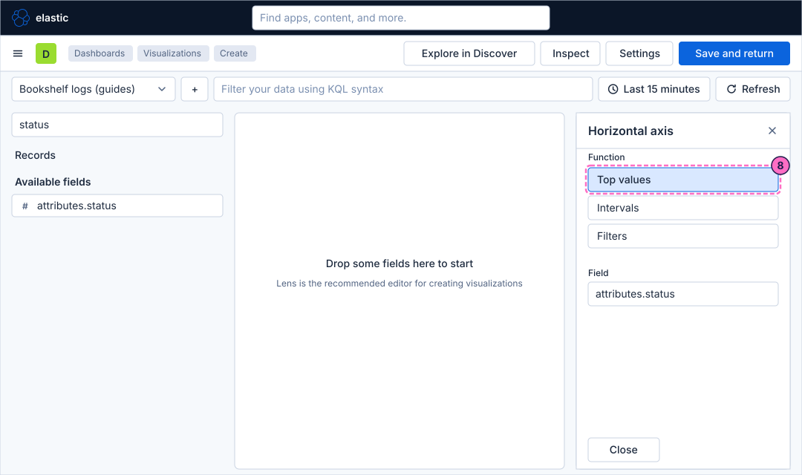
-
Drag the entry Records, above Available fields, onto the dashed Vertical axis button. Lens shows it as Count of records.
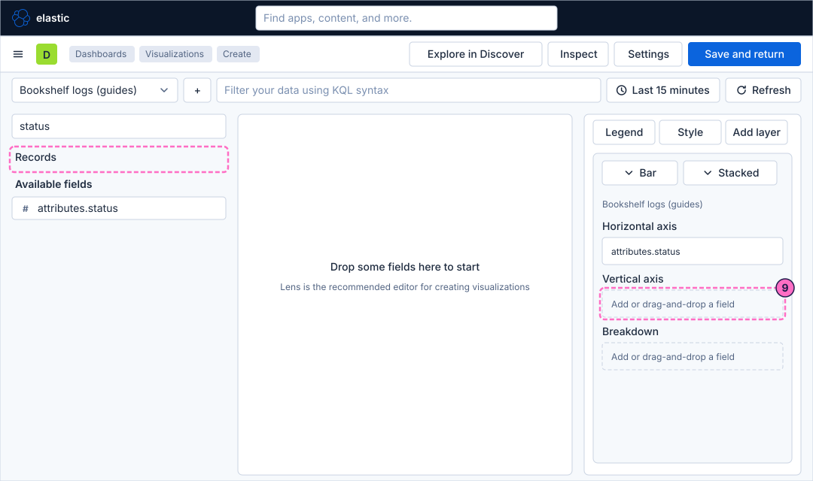
-
The workspace now draws a bar chart with one bar per status. Leave the chart type Bar with its subtype Stacked, and click Save and return.
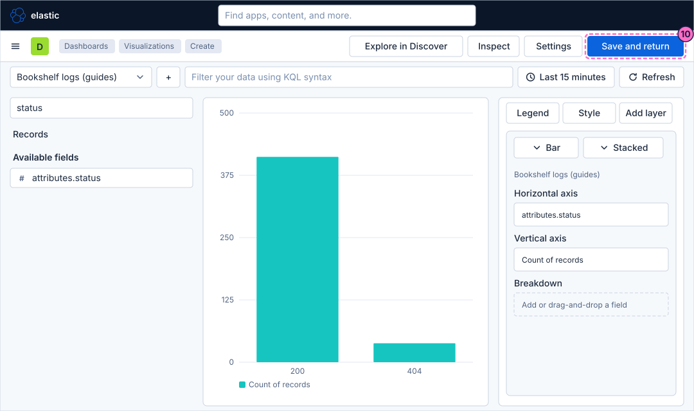
Save the dashboard
-
Back on the dashboard, which still is in edit mode and now shows the chart, click Save in the second bar.
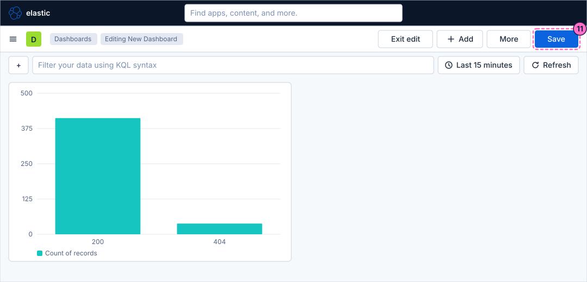
-
In the dialog Save as new dashboard, type
Bookshelf (guides)in Title. The dialog also has Description, Tags and a Permissions section, which you leave alone. -
Turn on Store time with dashboard, so that the dashboard always opens with the time range it was saved with.
-
Click Save.
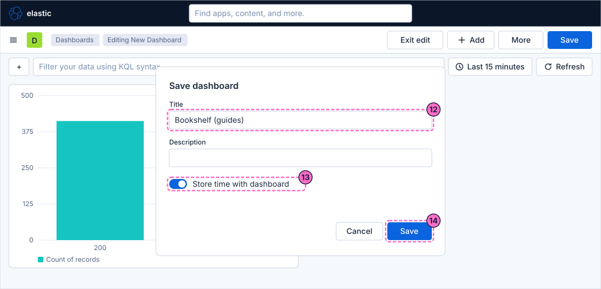
-
The breadcrumb now reads Editing Bookshelf (guides). Click Exit edit to return to view mode.
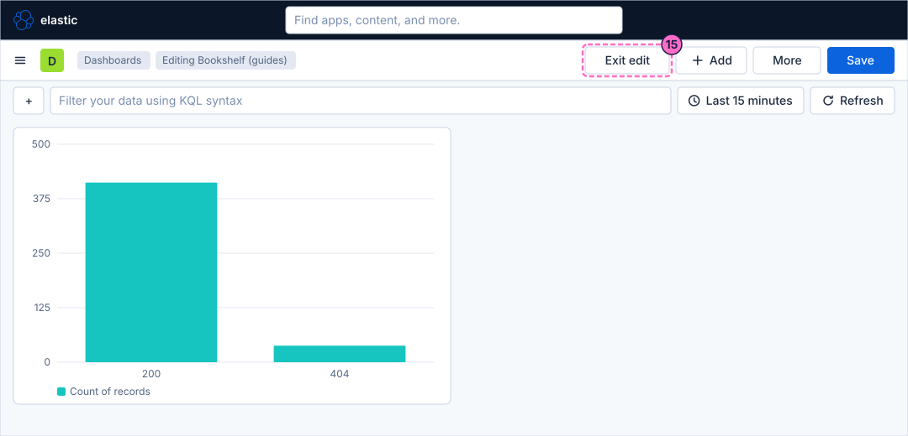
Check the result
Open Dashboards and then Bookshelf (guides). The dashboard must show one bar chart with a tall bar for 200 and a smaller one for 404, and it must open with the time range you saved it with (Last 15 minutes unless you changed it).
To see the chart react, force errors and press Refresh:
curl -X POST localhost:8090/mode/failingWithin about a minute a bar for the status 500 appears. Restore normal traffic afterwards:
curl -X POST localhost:8090/mode/normalVariations
-
Replace Top values by a date histogram on
@timestampto see the same count over time instead of by status; the guide on time series charts in Lens does this step by step. -
On a dashboard that already has panels, add the chart with Add → Visualization instead of the card of the empty state.
What can go wrong
| Symptom | Cause | Fix |
|---|---|---|
The workspace says that no results were found |
The time picker covers Last 15 minutes and the load generator or the Bookshelf service is stopped, or the lab started a moment ago. |
Widen the time picker to Last 1 hour, check the mode with |
The data view Bookshelf logs (guides) is not in the picker |
The guide that creates it was skipped. |
Do the data view guide first, then reopen the editor. |
The chart shows a histogram of the status values instead of one bar per status |
Lens chose Intervals for the numeric field. |
Open the Horizontal axis editor and select Top values. |
Save of the second bar is grey |
Nothing changed on the dashboard since it was opened. |
Add the panel first; the button turns blue when the dashboard has unsaved changes. |
Clean up
Keep the dashboard: the following guides in this series extend it. To remove it with everything else the lab stores, stop the
profile with docker compose --profile kibana down -v, which also deletes the volumes and therefore the dashboard.
Where to go next
-
Previous guide: Field statistics, patterns and ES|QL in Discover.
-
Next guide: Time series charts in Lens, which adds time on the horizontal axis, a breakdown and a second layer.
-
Reference: Building Dashboards explains edit mode, panels, sections and settings in full, and Lens covers the editor and its functions.